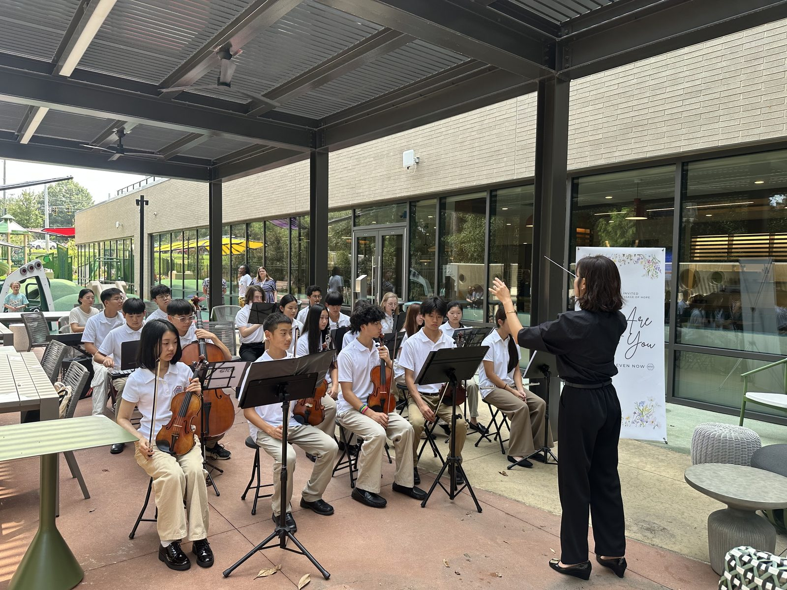
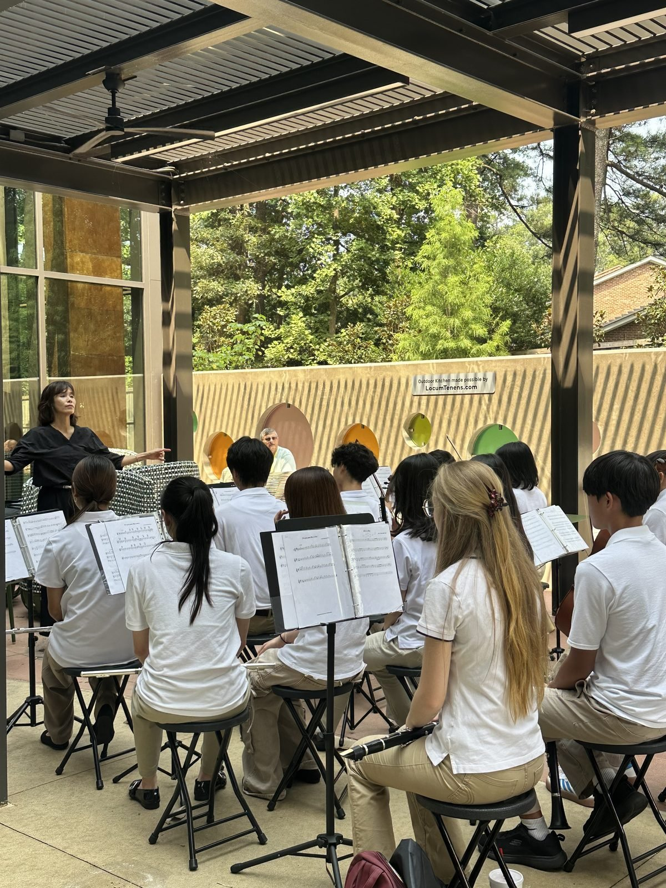
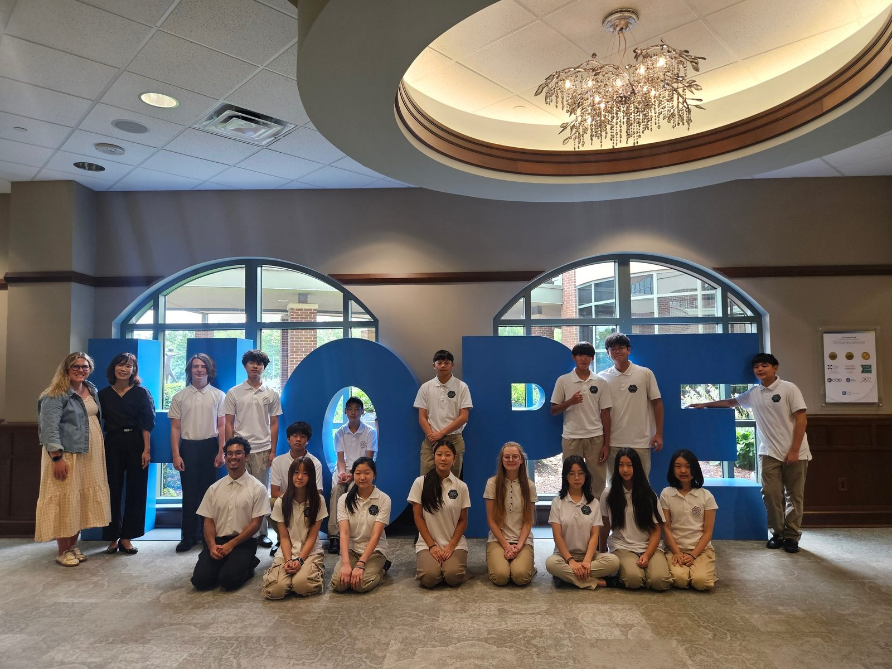
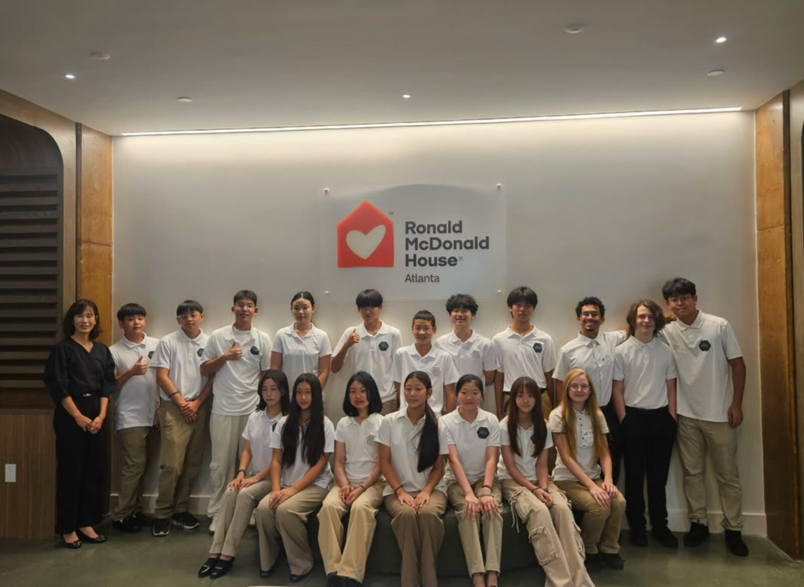

Music. Messages. Human connection.
Even Here.
Even Now.
A little music. A message just for you.
A connection that continues after our visit.
Made with care by GYCO students, for you and your community.

What would feel
good today?
Listen for a while, find a kind word, or ask us for something meaningful. Start wherever you like.
Explore the Community PortalOur video and public pages are open to everyone. Portal requests and saved activity need a free account.
- Melody Box
A little music
Watch and listen to music shared by our students.
- With You
A word of encouragement
Read shared messages or request a letter.
- Wish Pocket
A song with meaning
Request a song for yourself or someone you care about.
- Bloom Bank
Something to explore
Find teaching videos, resources, and activity guides.
- Hope Capsule
A moment of connection
Explore stories, updates, and shared letters.
Find your community.
Pick the place where we met, or take a look around. You’re welcome here.
The visit ends.
The connection doesn’t.



Small gestures.
Real relationships.
We’re the students of the Greater Youth Collaborative Opus (GYCO). We rehearse, perform, teach, and bring our own ideas into the communities around us.
WE ARE WITH YOU began with a simple question: how can we stay connected when we can’t be there in person?
Meet GYCO and explore our story
More about how WAWY began
GYCO was founded in 2022 and registered as a 501(c)(3) in May 2023. Its first student-centered platform, WAWY, was proposed and developed by student founders Jueon (Aaron) Kim and Yeoeun (Kate) Kim.
Students have performed at partner communities, supported refugee families with Friends of Refugees, and assembled 100 care packages for people experiencing homelessness in Atlanta.
From a poster or a printed card?Take WE ARE WITH YOU With You
These are the materials you may have received during one of our visits. Open a brochure to view it full size.
On the Wall Where We Visit
Help keep the
connection going.
Your support helps us continue student-led community programs, performances, and outreach.
As a small expression of our gratitude, we may send supporters a W.A.W.Y message card or a short musical thank-you video created by our students.